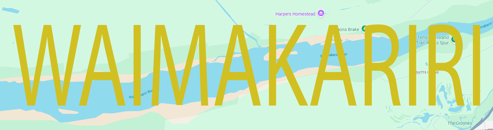

What is this website about?
This website is created for people who
live in the Waimak or
who are planning to travel to the Waimak and are wanting to receive information about gyms in the area.
The information that they may want to know about includes location, price, equipment, and what gym is right for
you.
Above you can click different tabs to check out our 3 locations (Kaiapoi, Rangiora, Southbrook) and all of our 9
gyms we selected.
Voting poll
What is the Waimakariri
Waimakariri is a district located in the Canterbury region of New Zealand’s South Island. It is north of
Christchurch and the area covers from the coast to the foothills of the Southern Alps. The district includes
towns like
Rangiora,Kaiapoi and Southbrook, which are rapidly growing communities with a mix of rural and suburban living.
The Waimakariri is most known for its fertile farmland. Agriculture such as dairy, cropping, and sheep
farming. The area also has beautiful natural landscapes, including rivers, beaches, and forests, making it
popular for outdoor activities like hiking, fishing, and cycling.
The district combines a relaxed rural lifestyle with access to urban services from nearby Christchurch. It has
been growing rapidly as people move there for more space while still commuting to the city. Waimakariri District
balances nature, farming, and modern living in one diverse and vibrant region.
Map of Waimakariri